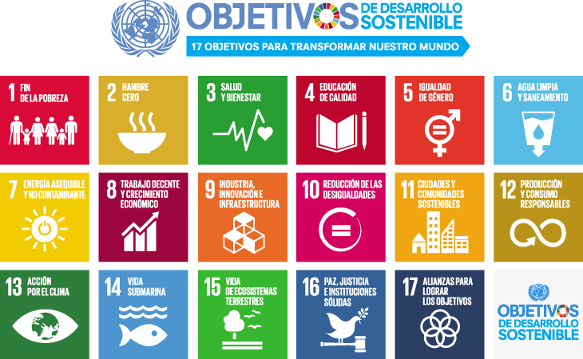

|
Objetivo De Desarrollo Sostenible No.2 |
|
 |
|
|  |
| OBJETIVOS DE DESARROLLO SOSTENIBLE |
| Los Objetivos de Desarrollo Sostenible (ODS) constituyen
un llamamiento universal a la acción para poner fin a la pobreza, proteger el planeta y mejorar las vidas y las perspectivas
de las personas en todo el mundo. En la década del 2020 al 2030 es fundamental la necesidad de actuar para hacer
frente a la creciente pobreza, empoderar a las mujeres y las niñas y afrontar la emergencia climática.
Conozca mas aquí |
 |
| HAMBRE CERO |
| El Objetivo de Desarrollo Sostenible 2 busca ponerle fin
al hambre, lograr la seguridad alimentaria, la mejora de la nutrición y promover la agricultura sostenible. El hambre y la
desnutrición hacen que las personas sean menos productivas y más propensas a sufrir enfermedades, por lo que no suelen
ser capaces de aumentar sus ingresos y mejorar sus medios de vida. Por esta razón y muchas otras es necesario ponerle fin
al hambre y a la desnutrición.Conozca mas aquí |
 |
| ACCIONES |
| Actualmente el "Programa de Nutrición" de la "Fundación
Juan Bautista Gutiérrez" tiene el objetivo de desarrollar un impacto generacional al incidir en la disminución de los índices
actuales de desnutrición crónica, siguiendo los principios de la Seguridad Alimentaria y Nutricional, a través de la
transformación y desarrollo de competencias, promoviendo la autosostenibilidad en el cambio de comportamiento de las mujeres
y sus familias; acercando alimento nutritivo a las comunidades e impulsando la generación de ingreso a través del emprendimiento.
Conozca mas aquí |